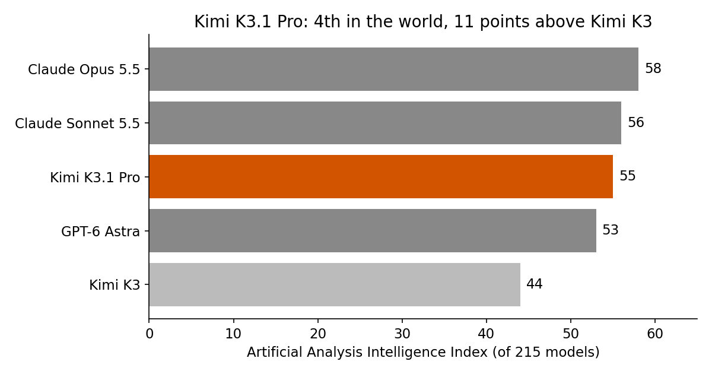
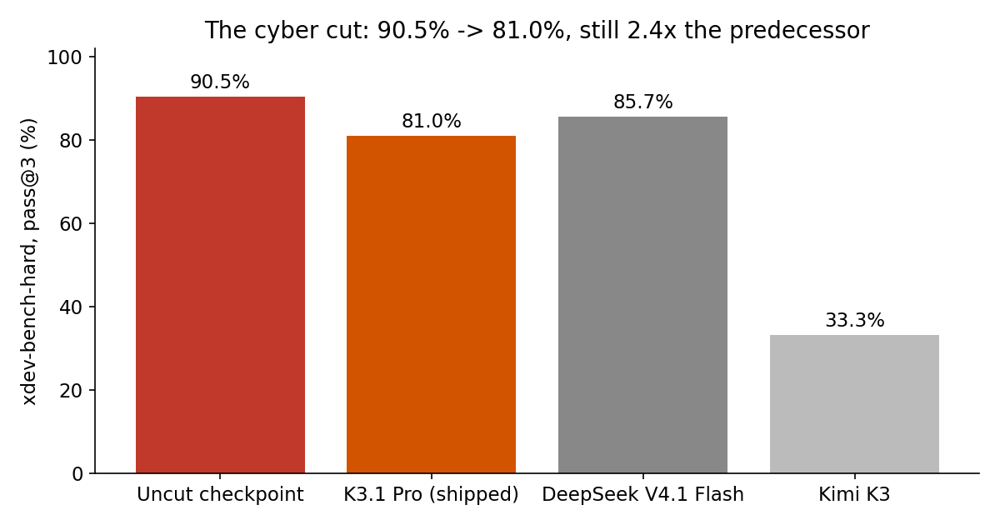
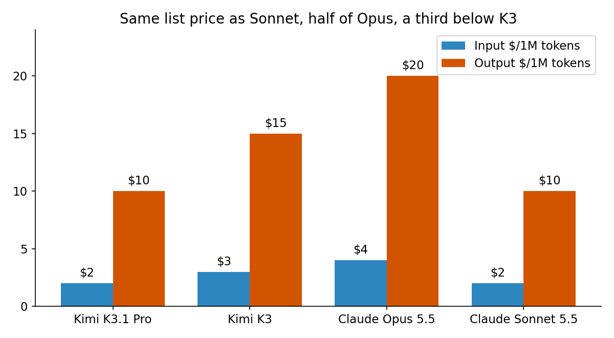
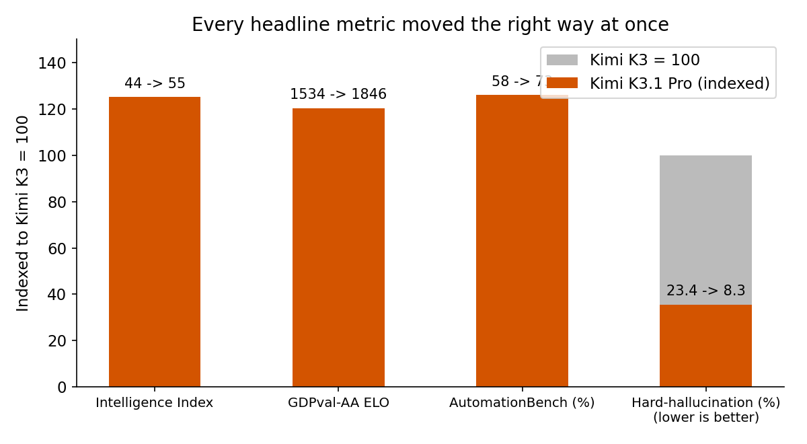

On October 23, 2026, Moonshot AI released Kimi K3.1 Pro — and then did something no frontier lab has done at launch: it announced, in its own technical blog, that it had deliberately made the model worse at something. Not worse in general. Worse at hacking.
Moonshot found that cyber-related material in its general training data, plus hacking-style tasks in its reinforcement-learning environments, kept lifting the model's ability to find and exploit software flaws. For a model whose weights it plans to publish for anyone to download — promised "by Nov 4, 2026" — that trajectory was a problem. So it removed the cyber data from mid-training and filtered the cyber tasks out of RL, while keeping general coding tasks. The stated rule: "We aim not to release open weights that would extend the absolute frontier of cyber capability."
The same release is also, by the independent numbers, the strongest open-weight model ever measured. Both facts are true at once. That tension is the story.
The ELI5 version
Imagine a locksmith school that publishes its full curriculum online for free — every lock, every technique, including the ones that open other people's doors. Now imagine the school first deletes the chapter on picking high-security locks, publishes the rest, and says publicly: "We removed that chapter on purpose, and here is exactly how much skill we removed."
That is Kimi K3.1 Pro. The "weights" are the curriculum: the trained numbers that let anyone run the model on their own machines. Open weights mean no API gatekeeper, no usage monitoring, no one who can revoke your copy. That is why the cyber question matters more for this release than for a closed model — once the file is downloaded, the maker cannot take it back or watch how it is used. And that is also why Moonshot's admission is unusual: labs normally trumpet capability gains, not capability removals. Putting a number on the removal — 90.5% to 81.0% — invites exactly the scrutiny this post is doing.
How it works: post-training, not a new brain
K3.1 Pro is not a new architecture. It is Kimi K3 post-trained much harder: same 3T-class mixture-of-experts base — 2.8 trillion total parameters, about 104 billion active per token — with a 1,048,576-token context window, native vision input, and thinking always on (a reasoning-effort setting of low, high, or max, with max as the default).
That framing matters for interpreting the gains. The jump from K3 to K3.1 Pro is a post-training story: better RL environments, better data curation, and — the cyber cut itself — data removal as a deliberate engineering choice. The model also runs about twice as fast as K3 on Moonshot's API (73.5 tokens/sec in Moonshot's figures), with a Highspeed tier at double the price ($4/$20) for 2–3x the speed.
The cyber cut worked through two levers, and Moonshot names both: strip cyber-related content from the mid-training corpus, and filter hacking-style tasks out of the RL task mix. General coding tasks stayed. The logic is that exploit skill is not the same skill as coding skill — it is coding skill pointed at a specific target (find the flaw, write the exploit, take over the test machine) and trained on specific data. Remove the target and the data, and the general skill remains while the exploit skill degrades. The numbers say it degraded only partly, which is the honest caveat below.

The numbers: near-frontier, half the price, a dial not a wall
The frontier gap is now 3 points. On Artificial Analysis's independent Intelligence Index, K3.1 Pro scores 55, fourth of 215 models, just 3 points behind the top score of 58 (Claude Opus 5.5) and ahead of GPT-6 Astra (53). Kimi K3 scored 44. The open-weight gap to the best closed model shrank from 14 points to 3 — if the weights ship, which is still a promise with a date and no published license.
The agentic gains are broad, not one benchmark. GDPval-AA (Artificial Analysis's broad agentic ELO) rose 1,534 → 1,846 (+312). AutomationBench, which tests agentic SaaS workflows, rose 58% → 73%. Moonshot's internal hard-hallucination rate fell 23.4% → 8.3%. Moonshot's own table puts it ahead of GPT-6 Astra on SWE-Marathon, HLE with tools, OfficeQA, and BrowseComp, while trailing on Terminal-Bench Science and OSWorld.
The price is the story for anyone running agents at volume. API pricing is $2 per million input tokens, $10 output, $0.20 cached input — flat across the full 1M context, no long-context surcharge. That is a third below K3 ($3/$15), the same list price as Sonnet 5.5, and half of Opus 5.5 ($4/$20). Thinking is always on, so output token counts will run higher than a non-reasoning model at the same task unless you turn the effort down — which brings us to the catch.


The honest caveat — where this could break
Four things to keep in view. First, the cyber cut is a dial, not a wall. The shipped model still scores 81.0% on Moonshot's in-house xdev-bench-hard test (exploiting recently disclosed bugs in software like the Linux kernel and Node.js, best of three attempts), down from 90.5% for the uncut checkpoint — a 9.5-point haircut, 10.5% relative. It still scores 2.4x its predecessor (33.3%) and sits below DeepSeek V4.1 Flash (85.7%) on the same test, but 81% is not "safe," it is "less dangerous." And the test is Moonshot's own, unreplicated independently. Once weights are public, anyone can fine-tune the removed capability back — press coverage already notes one company planning to strip the safeguards after release. Moonshot's policy constrains Moonshot's release, not the weights' future.
Second, the Terminal-Bench headline depends on whose harness you trust. Moonshot's table reports 65.7% on Terminal-Bench 4.0, just behind Opus 5.5's 66.4% on the same Claude Code harness; an independent run reported 67.0%, the highest recorded. Same model, different harness, different headline — the same lesson as the ARC Prize rerun of GPT-6 Astra (62.7% independently vs 99.9% on the vendor's own harness). Never trust a launch-day number without asking who ran the harness.
Third, the price discount is fragile against verbosity. Independent coverage notes K3.1 Pro uses far more output tokens than most models. The notebook's toy task makes it concrete: a task with 50K input and 100K output tokens costs $2.20 on Opus, $1.10 on K3.1 Pro at equal verbosity — exactly half. At 1.5x output verbosity it costs $1.60, only 27% cheaper. Price per token is not price per task, and thinking-always-on makes the gap bigger. Measure cost per solved task on your own workload before switching.
Fourth, "open weights" is not "cheap to run." At 2.8 trillion parameters, the weights alone are roughly 2.8 TB at 1 byte per parameter (5.6 TB at BF16), before KV cache. Self-hosting is data-center-class hardware. For most teams the practical path is the API or a hosted endpoint, where the "open" part buys you portability and auditability, not a free lunch.

Takeaways
- A lab just published its own capability removal, with numbers. 90.5% → 81.0% on xdev-bench-hard is the first quantified answer to "how much attack capability should a downloadable model have" — and the answer is a dial, not a wall.
- The open-weight frontier gap is 3 points, not 14. Intelligence Index 55 (from 44), GDPval-AA +312, AutomationBench +15 points — but the weights are still a promise dated Nov 4, with no license published yet.
- Price per token is not price per task. $2/$10 is half of Opus on the price list; at 1.5x output verbosity the saving shrinks from 50% to 27%. Measure cost per solved task.
- Harness is a variable, not a detail. Terminal-Bench 4.0 reads 65.7% on Moonshot's harness and 67.0% independently. Ask who ran the harness before quoting a launch number.
- Open weights and cheap to run are different claims. 2.8T parameters means multi-terabyte weights; the API is the practical path for most teams, and the openness buys portability and auditability.
- Check it yourself. The companion notebook recomputes every headline number — the 11-point index jump, the 9.5-point cyber cut, the GDPval and hallucination gains, the verbosity trap, and the self-hosting weight math.